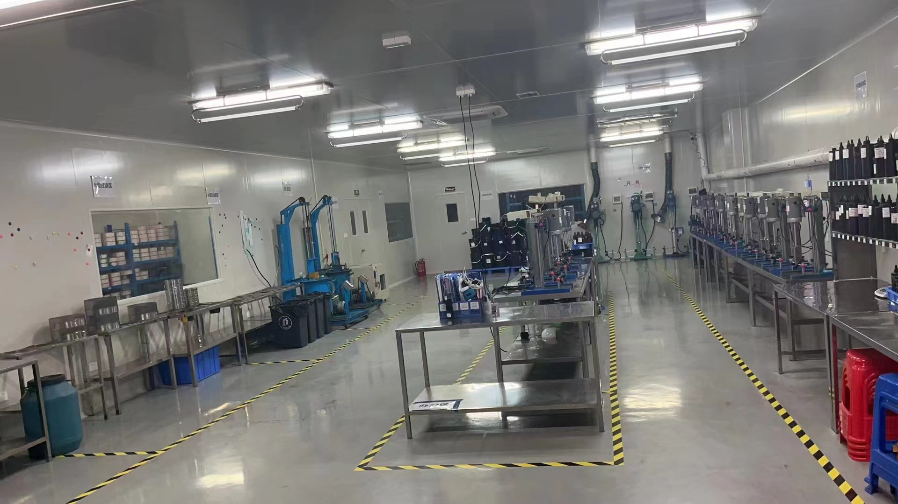

{kind=link}

Agree on the inspection plan before production
Specify product and packaging versions, the lot definition, inspection stage, sample-selection method and defect classifications. If using acceptance sampling, agree on the applicable standard, inspection level and acceptance limits with the inspector. Do not apply an arbitrary AQL to every product or treat sampling as proof that every unit is defect-free.

Order QC checklist
| Stage | Buyer should request or check | Hold when |
|---|---|---|
| Raw materials | Material identity, supplier/lot traceability, incoming acceptance records and relevant specifications | Identity or release status is unresolved |
| Bulk product | Link formula revision to batch; review agreed appearance, color, viscosity and other relevant results | Results do not meet the signed specification |
| Filling | Calibrated measurement method, fill records, closure checks and batch coding | Fill or closure results fall outside agreed requirements |
| Packaging | Match bottle, brush, label, box and artwork versions; inspect readability and integrity | Components or artwork differ from approval |
| Quantity | Reconcile SKU, shade, units per box, cartons and total units | Unexplained shortages, substitutions or mixed SKUs occur |
| Outer cartons | Check condition, protection, marks, dimensions and recorded weights | Packing differs from the transport plan or shows damage |
| Documents | Reconcile product descriptions, quantities, parties, batch details where applicable and destination requirements | Required information is missing or inconsistent |
Make the criteria measurable
Write “matches approved artwork revision 03” rather than “good label.” Define the approved color reference and test conditions instead of “same color.” For fill checks, distinguish volume from mass and use a suitable validated method; grams and milliliters are not interchangeable without the relevant density basis.
The required tests depend on product type and risk. Agree on relevant laboratory work with qualified parties rather than assuming a single test panel covers every gel, powder and liquid.
Separate inspection from shipping documentation
The document list may include the commercial invoice, packing list, transport document and other origin, safety or destination-specific records as applicable. A batch COA should be tied to the relevant batch and specification. An SDS is not a universal certificate of cosmetic compliance.
Ask the forwarder to confirm transport classification and packaging requirements using the actual product information. Do not assume all nail liquids can be shipped under the same conditions.
Close issues before release
Record the defect, affected scope, evidence, corrective action and reinspection result. Identify who can authorize rework, replacement, a permitted concession or shipment release. Safety and legal requirements cannot be waived by a commercial concession.
Common questions
Is a supplier's QC report sufficient? Assess its scope, traceability and supporting results against your risk and order requirements; agree on independent inspection when appropriate.
When should inspection happen? Plan checks at stages where a failure can still be corrected, with a final review before release.
What should happen to a failed lot? Keep it on hold until the authorized parties review corrective action and the required verification.
Gel polish carton specification: 360 PCS
GZ New Nail confirms 360 gel polish bottles per master carton. Confirm the bottle size, shade breakdown, inner packing, carton dimensions and gross weight on the order packing specification. Do not apply this count to other nail products or presentation kits.
Before shipment, reconcile the shade/SKU quantities, 360-bottle carton count, carton marks and packing list. The carton quantity is supplier-confirmed; it is not a count established by the video.

View supplied documents
Read the complete Halal facility certificate, water-based nail polish COA and third-party registration document, with their product scope and dates.